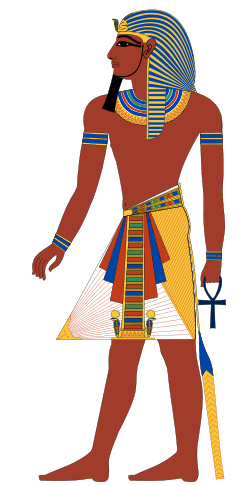
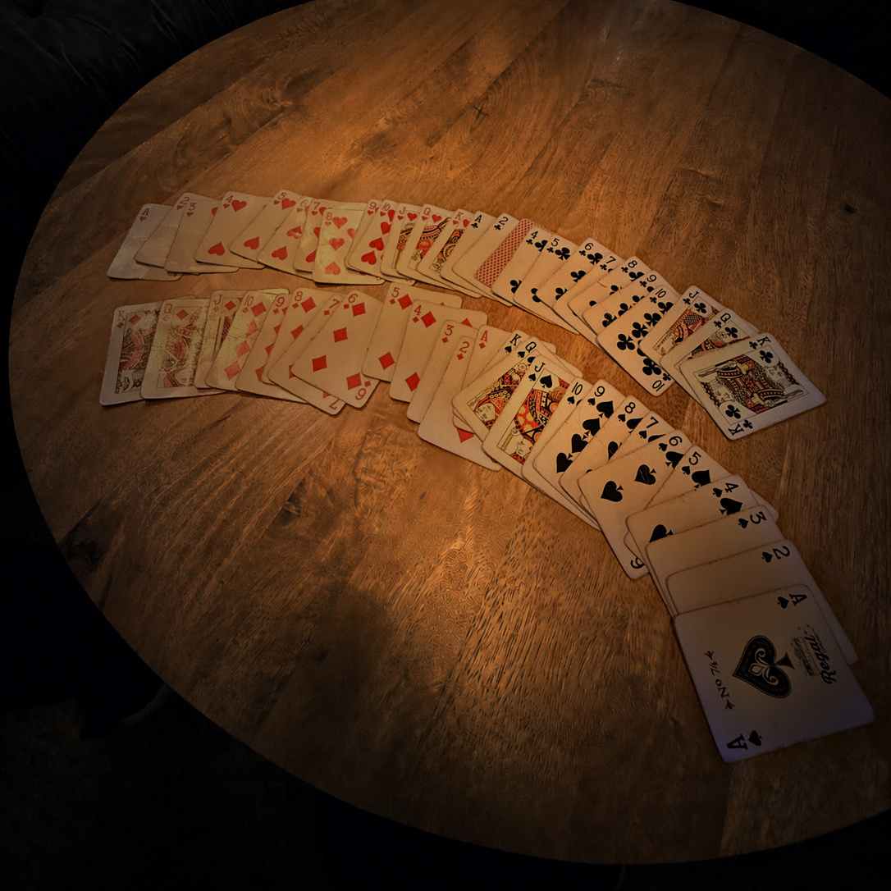
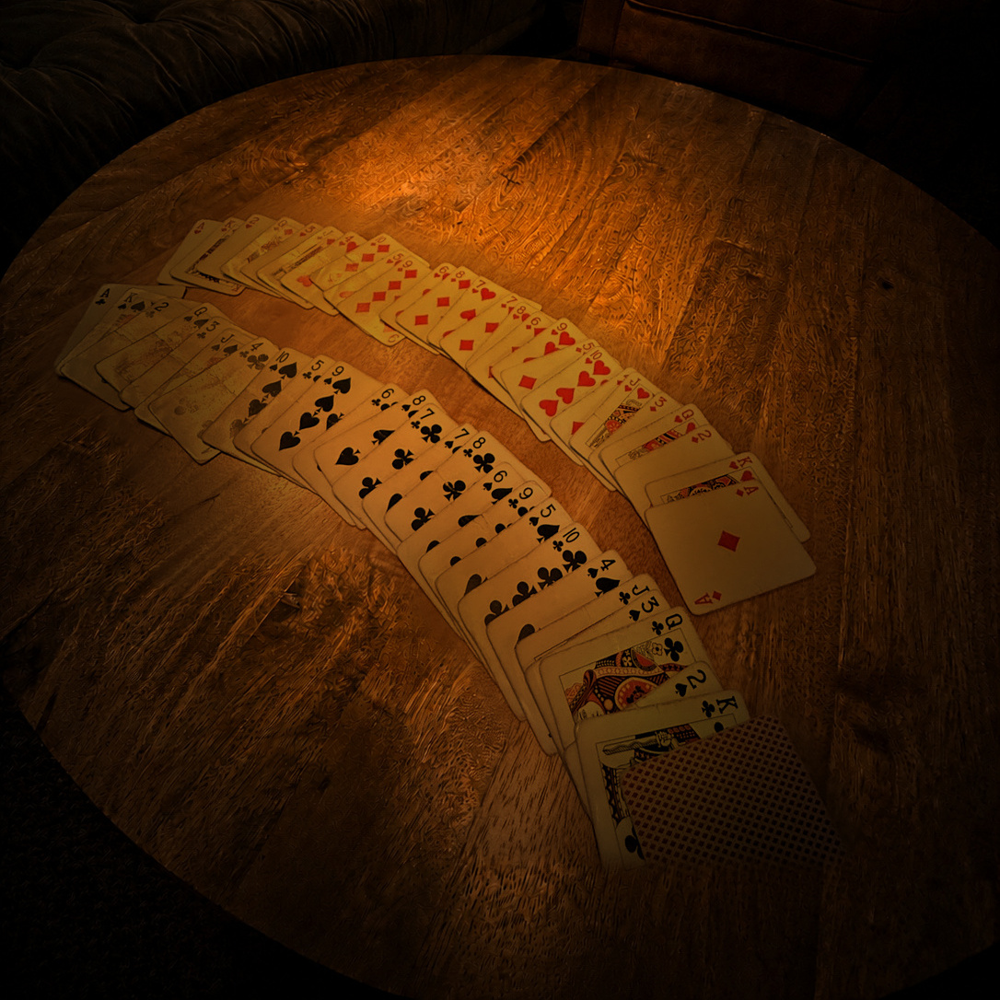
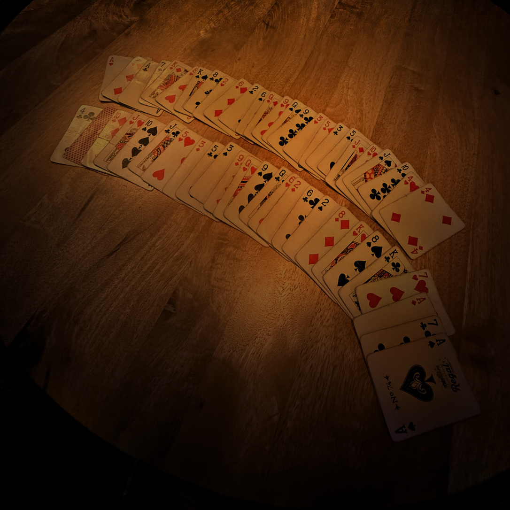
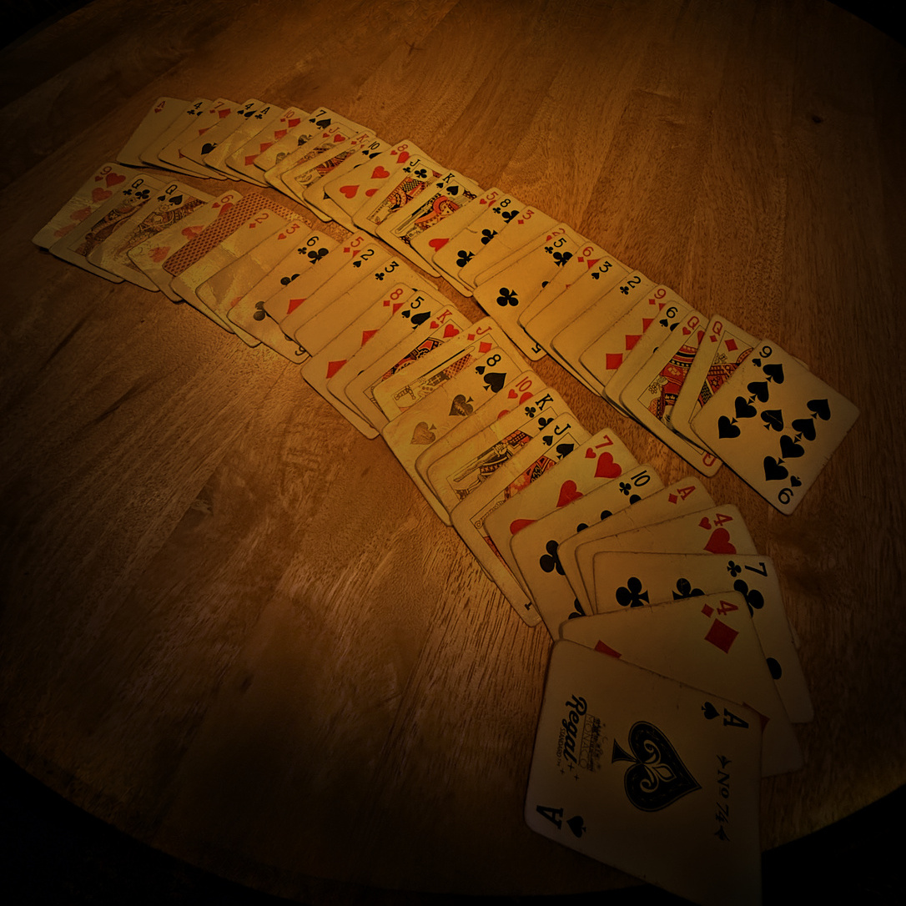
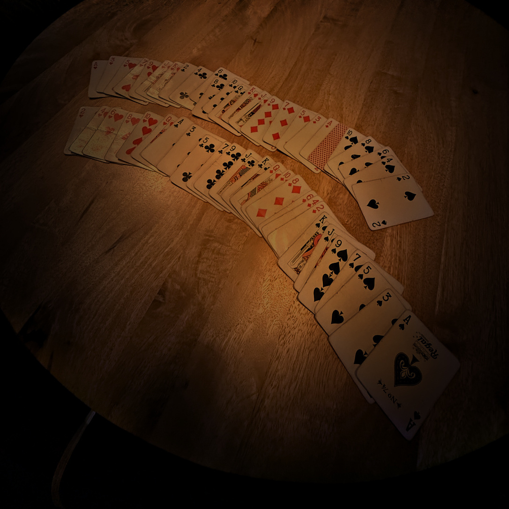
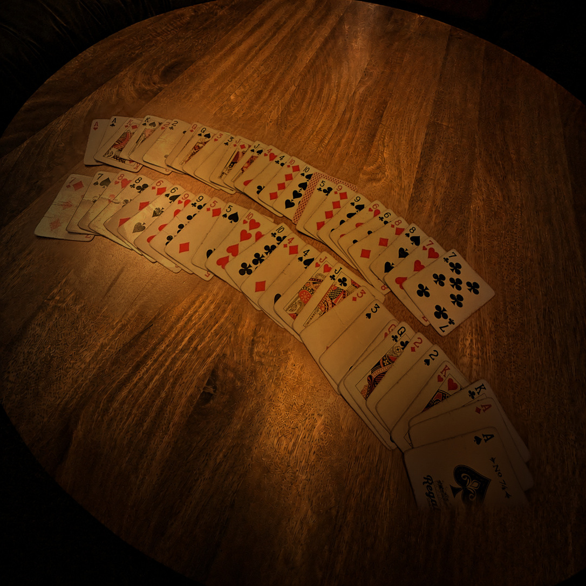

THE HIDDEN SEQUENCE
Nine filenames, eight shuffles, one terrible pun.
The page gave you shuffle-a.jpg. Changing the final letter uncovered seven more photographs. Continuing once past H revealed shuffle-i.jpg: an Egyptian figure pointing toward Pharaoh—or, more usefully, Faro.

THE MECHANISM
What is a Faro shuffle?
A perfect Faro shuffle divides a 52-card deck into two equal packets of 26 and interleaves them exactly, one card from each half at a time.
This level uses an out-shuffle: the first card from the top packet stays on top. Perform that perfect out-shuffle eight times and every card returns to its original position.
THE ORDER
The photographs were scrambled. The deck was not.
The completely ordered deck was the starting point. Repeating the out-shuffle and matching each new arrangement recovered the real chronology:

1D
2F 3B
3B
4H
5E 6A
6A
7G
8C
D · F · B · H · E · A · G · C
THE EXTRACTION
Every photograph had one card facing the wrong way.
Once the photographs were chronological, those eight upside-down cards had an order too. Rank supplied a value from 1–13. Black cards selected A–M; red cards selected N–Z.
ONE LAST THING